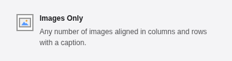
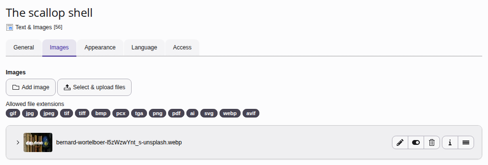
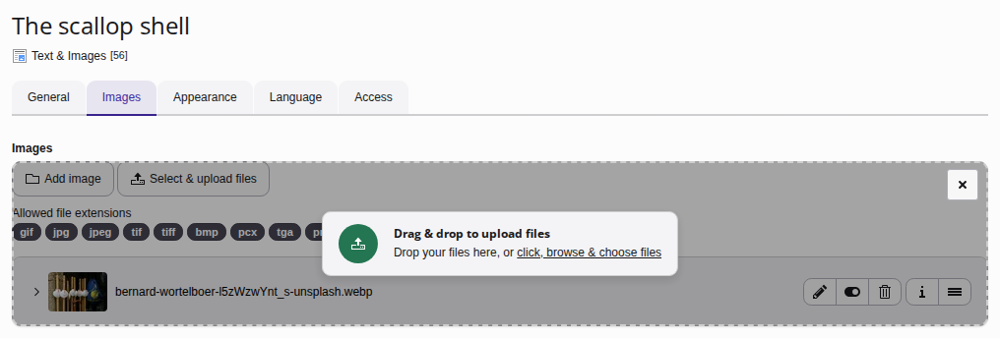
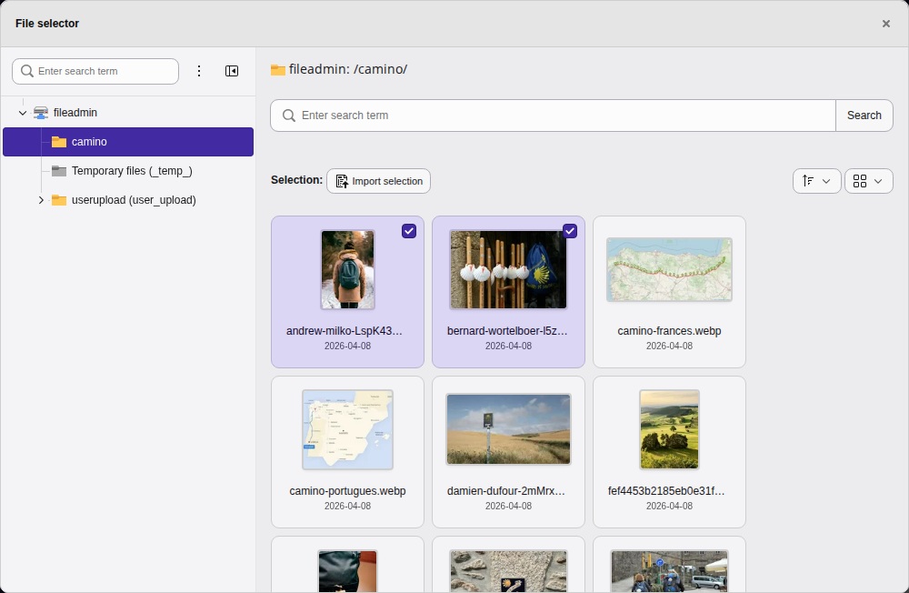
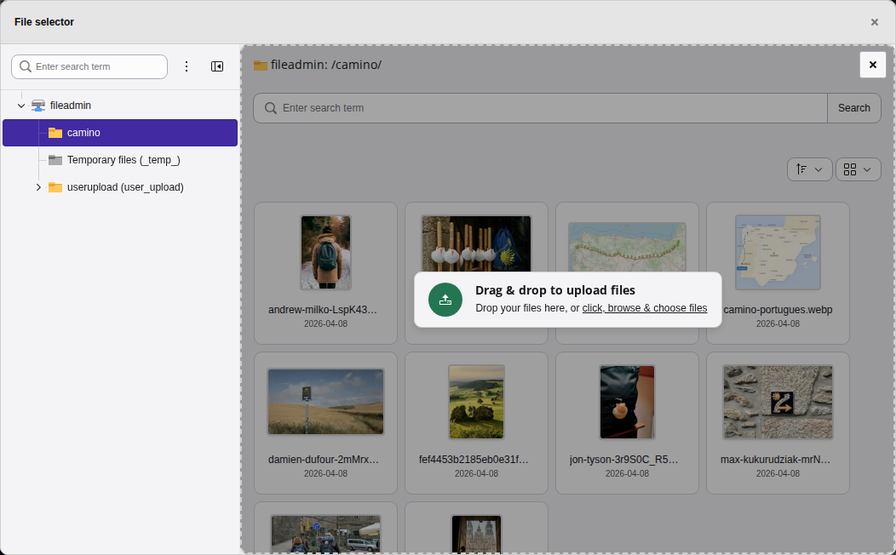
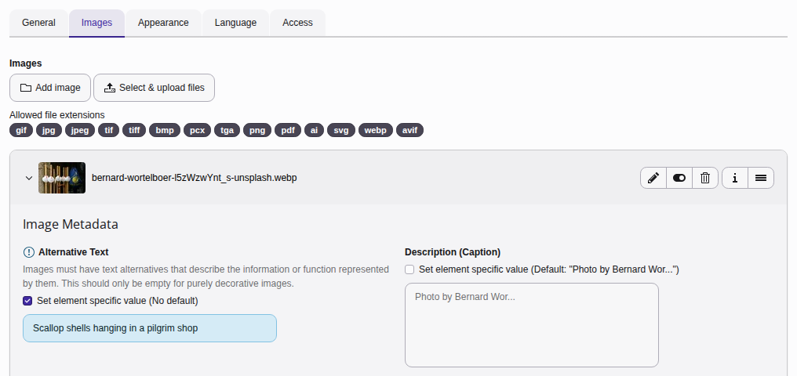
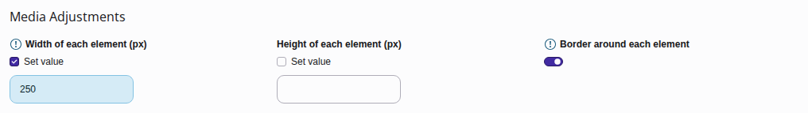
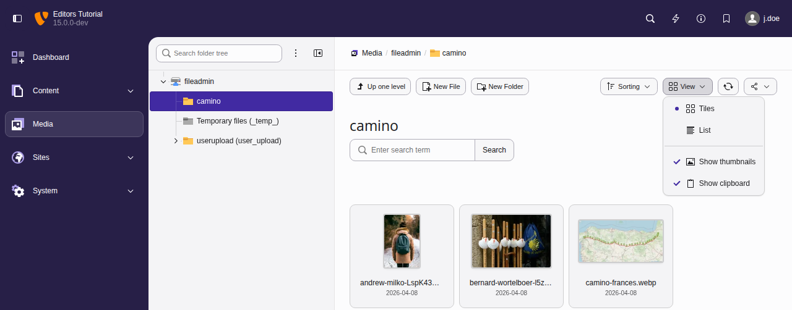
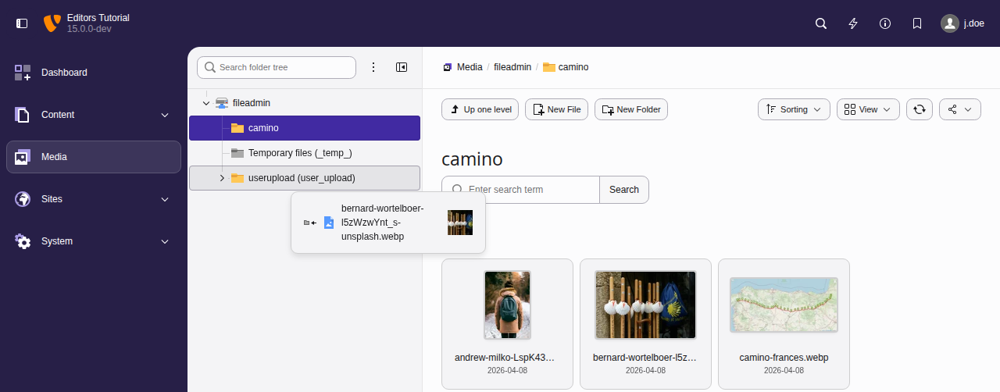
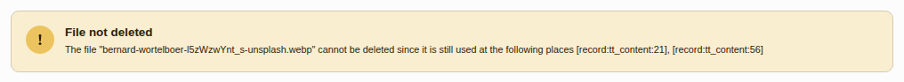

Working with images

For content elements that support images (for example Text & Images, Text & Media, Images Only), you will see an Images or Media tab when you create or edit the content element.
Start by Creating a content element of type "Text & Images", "Text & Media", or "Images Only". You can find them in the tab Typical page content.
Add an image to the content element
On the Images tab, click on the Add image button to display a File selector window which lets you browse for an image.

Click on "Add image" or "Select & upload files" in images tab to choose or upload an image
New in version 15.0 Feature: #110873 - Upload files by pasting them from the clipboard
You can also upload files from your computer straight into the field. TYPO3 uploads them and adds them to the field. Only files with one of the allowed file extensions are uploaded.
- Drop files onto the field: Drag the files from the file manager of your computer over the content element. A drop zone covers each file field, so you can drop the files anywhere onto the field.
- Paste files into the field: Copy the files in the file manager of your computer, or copy image data such as a screenshot. Click into the field and press Ctrl + V. On a Mac, press Cmd + V. If you paste without clicking into a field first and the form shows several file fields, TYPO3 asks which field to add the files to.

While you drag files over the content element, a drop zone covers the field
Browse the file tree, then select a folder. The file selector always starts in the root folder of the default storage. Use the search field to find a file by name. The search includes all the subfolders of the selected folder.

Click the name of an image to select it or use the "Upload files" dialoge. Alternatively, mark several images and import all of them at once.
New in version 15.0 Feature: #110873 - Upload files by pasting them from the clipboard
The file selector can upload files from your computer to the folder it shows:
- Click Select & upload files in the section Upload files below the files of the folder.
- Drop the files anywhere onto the files of the folder.
- Copy the files in the file manager of your computer, or copy image data such as a screenshot, and press Ctrl + V. On a Mac, press Cmd + V.
Only files with one of the allowed file extensions of the field are uploaded. If a file with the same name already exists in the folder, TYPO3 asks what to do with it. The folder then shows the uploaded files, so you can select them right away.

While you drag files over the file selector, a drop zone covers the files
Configure the image
The Images tab lets you perform a number of actions to configure an image.
Image metadata
Use the small arrow next to the thumbnail to collapse and expand this section.
Here you can set general metadata including description, alt text, and insert a link to the image.

Override the default meta data of the image with custom values for this location.
The information displayed here is drawn from the file metadata set in the Media. If required, you can override this metadata to set specific values for the image for the current content element.
You can experiment with the image manipulation editor to crop or resize the image. Making changes here won't impact the original image file in Media.
Media adjustments
Manually specify the width and height of the image in pixels, and apply a border.

Not setting a value means the size is calculated dynamically.
Note
This section is only visible when your site package is based on the Site Package Tutorial or on Fluid Styled Content. Site Packages based on the Bootstrap Package have means to dynamically set the size of the images. The images will resize responsively to fill their container.
Gallery settings
Choose where to position the image in relation to the text.
In "Text with Images" content elements you can position the image or images in respect to the text here.
Multiple images are automatically arranged in columns, two by two. You can change this behaviour with the Number of Columns field.
Behavior
Use the Enlarge on Click setting to enable a lightbox display for the image.
Tip
If you are more comfortable using shortcuts, there are different kinds of keyboard commands you can use in the backend forms.
Manage your images in the Media module
Changed in version 14.0 Feature: #107628 - Improved backend module naming and structure
This module has been renamed from Filelist to Media.
You can manage your previously uploaded images in the backend module Media:

You can view the files as Tiles or List by switching the settings.
TYPO3 uses a file abstraction layer (FAL) you can therefore move images into different folders without affecting the frontend output of the web page, even if they are used in multiple places.
You can move images into folders by drag and drop:

Grab a picture with the mouse, drag it to a folder and drop it there
The file abstraction layer will not allow you to delete images that are still in use in some content element:

TYPO3 FAL will prevent you from deleting files that are still in use
First alter or delete all content elements that still use the file, then you can delete the file itself.
See also chapter Managing files in the Fileadmin.